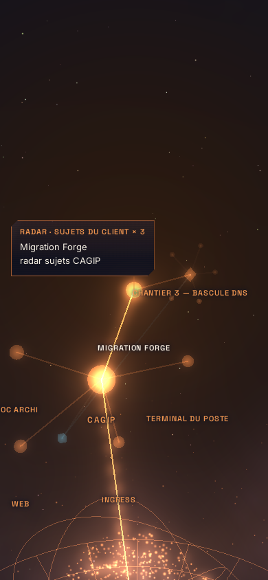
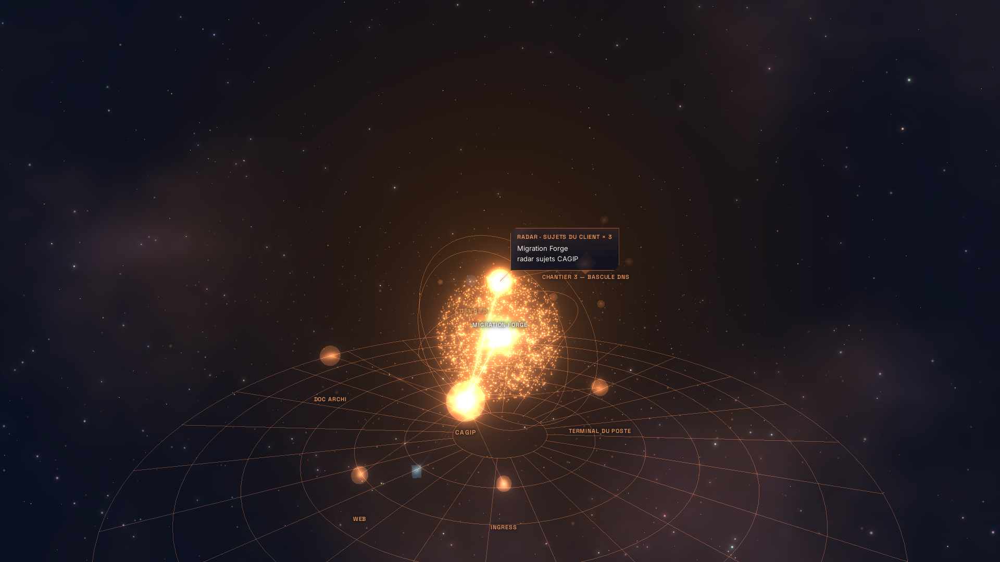
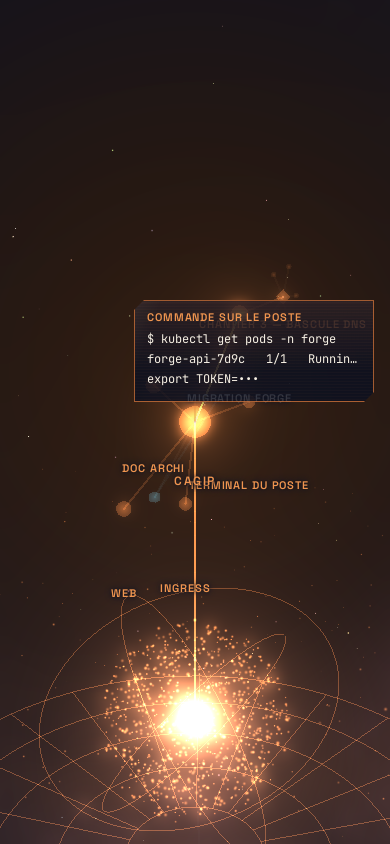
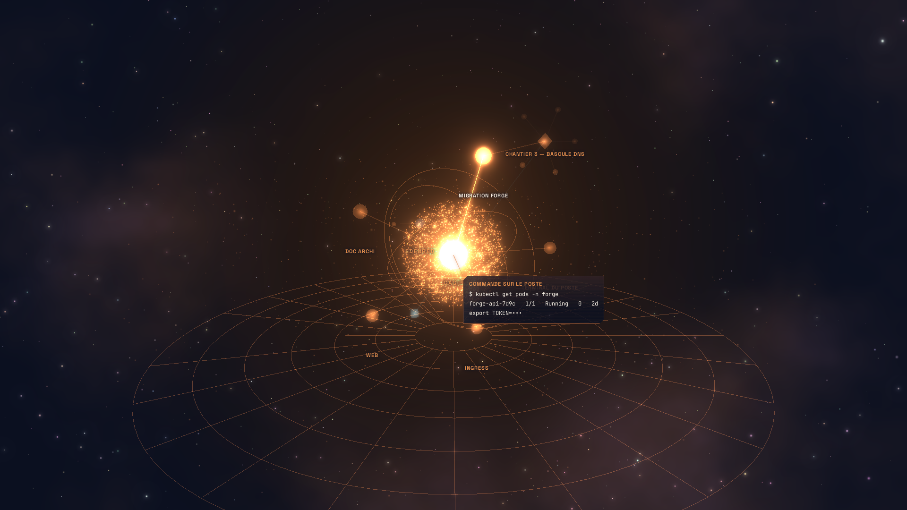
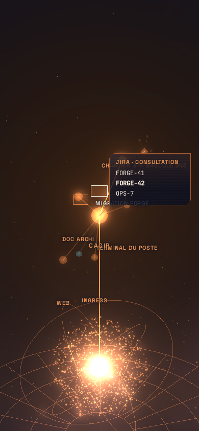
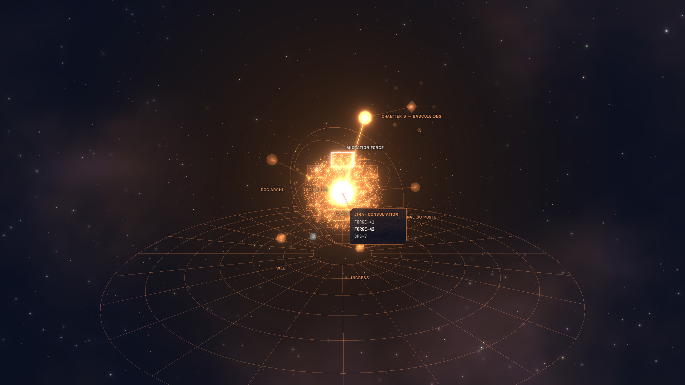
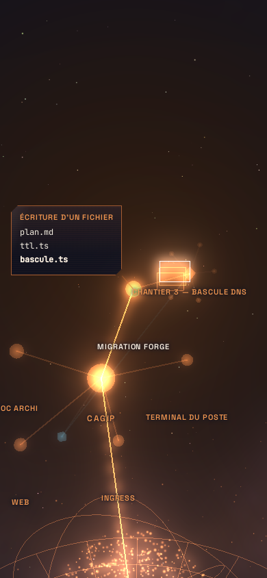
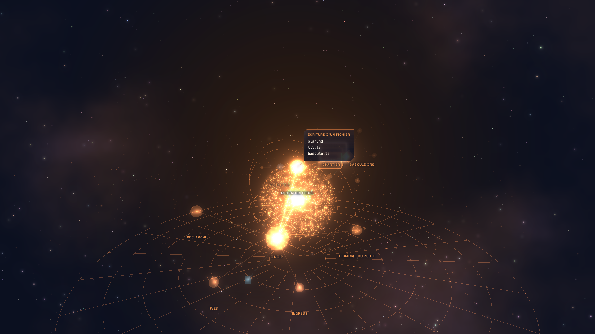
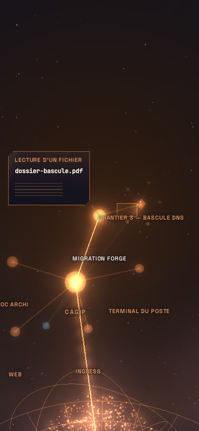
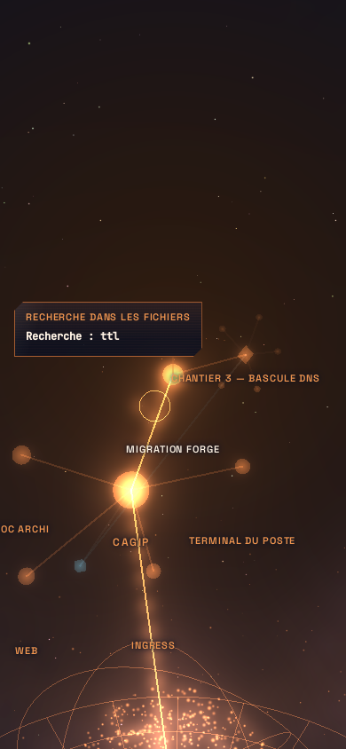

Jarvis en 3D — planche de référence, itération 2 « Jarvis montre ce qu'il fait »
F-236 / SF-236-08 → SF-236-14. Toutes les scènes F-234 ont désormais leur rendu 3D (seules S16, S18, S19 restent en S-GEN 3D, par déclaration). Panneaux holographiques (verre §7.2, DOM net, face à l'écran), effets préalloués, aucun appel réseau, aucun appel IA.
Goût du PO appliqué : orange de la marque en teinte normale, cyan pour l'attente, vert pour le réussi, violet pour le grand cerveau, rouge réservé aux alertes (test N13). Captures du banc headless en rendu logiciel (swiftshader) : téléphone 390 × 844 (niveau Moyen), PC 1920 × 1080 (niveau Haut), univers de test (CAGIP, Edenred ; sujet « Migration Forge », chantier 3, Zahi attendu).
Visa du PO délégué pour cette vague : la planche est fournie, les remarques de goût seront traitées dans la SF de polissage suivante.
Socle des scènes (SF-236-08)

S-GEN 3D — impulsion, libellé du registre, entité allumée · téléphone

S-GEN 3D — impulsion, libellé du registre, entité allumée · PC
Commandes, tickets, fichiers (SF-236-09)

S3 commande — flux du poste au cœur, 2 lignes masquées · téléphone

S3 commande — flux du poste au cœur, 2 lignes masquées · PC

S4 tickets — éventail, carte nommée illuminée · téléphone

S4 tickets — éventail, carte nommée illuminée · PC

S5 écriture — feuillets, nuage du dépôt · téléphone

S5 écriture — feuillets, nuage du dépôt · PC

S5 lecture d'un document — pages qui défilent · téléphoneS5 lecture d'un document — pages qui défilent · PC

S5 recherche — la loupe · téléphoneS5 recherche — la loupe · PC
A3 cloche (attente, onde) · PCA4 coût en € (administrateur, 5 s) · téléphoneA4 coût en € (administrateur, 5 s) · PCA5 la veille sonne (rouge, cadran relié) · téléphoneA5 la veille sonne (rouge, cadran relié) · PC
Réserves de l'itération 1 traitées (SF-236-14)
Grand cerveau déployé — centre adouci, étiquettes sur verre · téléphoneGrand cerveau déployé — centre adouci, étiquettes sur verre · PC
Transitions (séquences de 6 images)
T-P1 — apparition d'un panneau (0,42 s) · téléphone
t = 0 mst = 84 mst = 168 mst = 252 mst = 336 mst = 420 ms
T-P1 — apparition d'un panneau (0,42 s) · PC
t = 0 mst = 84 mst = 168 mst = 252 mst = 336 mst = 420 ms
T-P2 — disparition d'un panneau (0,28 s) · téléphone
t = 0 mst = 56 mst = 112 mst = 168 mst = 224 mst = 280 ms
T-P2 — disparition d'un panneau (0,28 s) · PC
t = 0 mst = 56 mst = 112 mst = 168 mst = 224 mst = 280 ms
T-L4 — rupture d'une attente levée (0,7 s) · téléphone
t = 0 mst = 140 mst = 280 mst = 420 mst = 560 mst = 700 ms
T-L4 — rupture d'une attente levée (0,7 s) · PC
t = 0 mst = 140 mst = 280 mst = 420 mst = 560 mst = 700 ms
T-P3 — l'enveloppe vole vers « À envoyer » (1,1 s) · téléphone
t = 0 mst = 220 mst = 440 mst = 660 mst = 880 mst = 1100 ms
T-P3 — l'enveloppe vole vers « À envoyer » (1,1 s) · PC
t = 0 mst = 220 mst = 440 mst = 660 mst = 880 mst = 1100 ms
Règles §7.3 : jamais de saut (tests du pas maximal de T-P1/T-P2 ; ressorts et fondus partout) · interruptible (un panneau qui revient repart de l'état courant) · ≤ 3 transitions majeures · couleurs d'état d'une seule source (`jarvis-motion.ts`) · un seul héros (≤ 3 nœuds allumés) · rien ne bouge pendant l'écoute · aucun roulis · texte DOM net, jamais incliné · jamais de noir.
Mesures i/s : à relever sur les appareils du PO (le banc headless est en rendu logiciel) ; l'événement `RENDER` (SF-236-06) les remonte en production.